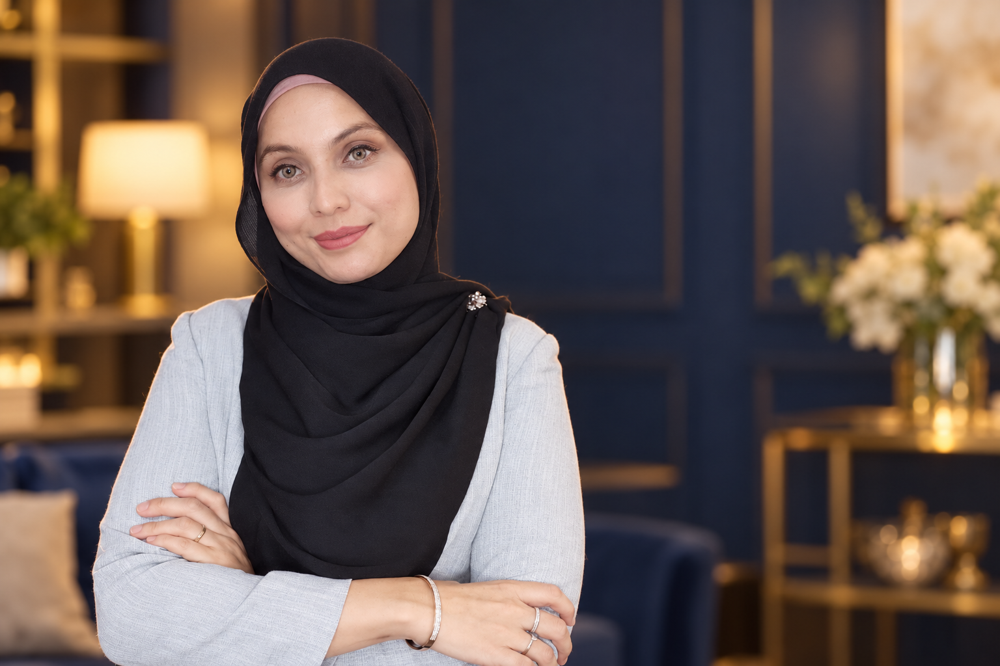

Wellness
Pengenalan yang jelas kepada pengalaman dan produk yang anda ingin kenali.
Farra Affandi / Akak Hydrogen
10 tahun dalam terapi kecantikan dan wellness, dengan pendekatan yang mesra, pembelajaran praktikal dan bimbingan untuk langkah seterusnya.

Pendekatan saya
Saya Farra Affandi. Mungkin anda kenal saya sebagai Akak Hydrogen.
Saya menggabungkan pengalaman wellness hidrogen, pembelajaran kecantikan dan perkongsian tentang peluang bisnes. Sama ada anda ingin tahu tentang sesuatu sesi atau mahu cuba perkara baharu, bagi saya langkah pertama ialah memahami apa yang anda cari.
Dengan pengalaman 10 tahun dalam terapi kecantikan dan wellness, saya membantu anda memahami pilihan yang ada melalui penerangan dan bimbingan secara peribadi.
Nak tahu tentang peralatan, sesi, coaching atau langkah seterusnya? Tanya sahaja. Farra sedia berkongsi.
Asas setiap perkongsian
Pengenalan yang jelas kepada pengalaman dan produk yang anda ingin kenali.
Appointment personal dan perbualan yang mesra, supaya anda tahu apa yang boleh dijangkakan.
Ruang untuk teroka kemahiran atau hala tuju bisnes baharu, tanpa menjanjikan hasil tertentu.
Ada soalan tentang produk, sesi pertama atau peluang baharu? Mulakan dengan berbual bersama Farra.
Jom Hubungi